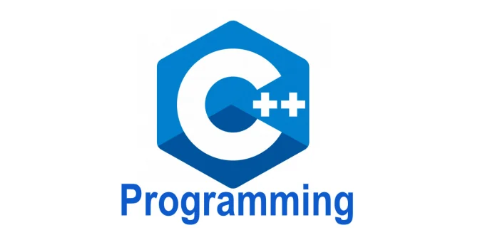

<!DOCTYPE html>
<html>
    <head>
        <title>in_code</title>
        <link href="img/favicon.png" rel="shortcut icon" type="image/x-icon">        
    </head>
    <style>
        body { 
            background-color: blanchedalmond;
        }
        .middle {
            text-align: center;
        }
        .title {
            font-size: 50px;
            font-family:-apple-system, BlinkMacSystemFont, 'Segoe UI', Roboto, Oxygen, Ubuntu, Cantarell, 'Open Sans', 'Helvetica Neue', sans-serif;
        }
        .text_1 {
            font-family:'Gill Sans', 'Gill Sans MT', Calibri, 'Trebuchet MS', sans-serif;
            font-size: 20px;
            background-color: white;
        }
        .title2 {
            font-size: 40px;
            color: gray;
        }
        .font_1 {
            font-family:'Lucida Sans', 'Lucida Sans Regular', 'Lucida Grande', 'Lucida Sans Unicode', Geneva, Verdana, sans-serif;
        }
    </style>
    <main class="middle title">
        !Hello Welcome to this Website!
    </main>
    <main class="middle title2">
        이 웹사이트에 오신 것을 환영합니다!
    </main>
    <p style="font-size: 15px;" class="middle">BY. A.Y.E</p>
    <p class="text_1 middle">
        이 웹사이트는 여러가지 정보 및, 필요할거 같은 잡 지식들을 포함 하고 있습니다!
    </p>
    <h2 class="middle font_1">Section #1: Information of Python/파이썬 정보들</h2>
    <center></center>
    <p class="text_1 middle">Python은 C언어로 만들어진 언어/1989년에 귀도 반 로섬이라는 개발자가 심심해서 만들었다는.../1991년의 공식 발표/처음 코딩을 접하는 사람들에게는 강추한다는 언어!<br>좋은 자료: <a href="https://wikidocs.net/book/1" target="_blank"> Jump To Python</a> 지은이: 박응용</p>
    <p class="text_1 middle">
        파이썬으로 할 수 있는 것들: 디스코드 봇 (discord bot)을 discord.py 이용해서 만들기
        <br> Flask, Django 같은 것을 이용해서 웹 프레임워크 만들기
        <br> Pygame 라이브러리 사용하여 게임 만들기
        <br> GUI 프로그램 만들기
    </p>
    <h2 class="middle font_1">Section #2: Information of C / C언어 정보</h2>
    <center></center>
    <p class="text_1 middle">C, "프로그래머를 믿어라" ("Trust the programmer") 1972년에 만들어진 언어 / 데니스 리치라는 벨 연구소 직원이 만듬, 장점은 컴퓨터에는 착해서, 엄청 빠르다는 것<br>좋은 자료: <a href="http://www.yes24.com/Product/Goods/35094862" target="_blank"> Do it! C언어 입문</a> 지은이: 김성엽</p>
    <p class="text_1 middle">
        C언어로 할 수 있는 것들: 게임 만들기
        <br> 데스크탑 앱 만들기
        <br> 계산기 만들기
        <br> 기타 등등...
    </p>
    <h2 class="middle font_1">Section #3: Information of C / C언어 정보</h2>
    <center></center>
    <p class="text_1 middle">C++는 C에서 한번더 업그레이드 되었다는 뜻을 가지고 있다</p>
    <p class="text_1 middle">
        C++으로는 C에서 할수있는것을 다 할 수 있음
    </p>
    <h2 class="middle font_1">Section #4: Information of C# / C# 언어 정보</h2>
    <center></center>
    <p class="text_1 middle">C#의 숨은 의미는 c++++이다. Unity 엔진도 C#으로 돌린다  </p>
    <p class="text_1 middle">
        C++으로는 C에서 할수있는것을 다 할 수 있음
    </p>
    <h2 class="middle font_1">Section #5: Information of Java / Java 정보</h2>
    <center></center>
    <p class="text_1 middle">Sun Microsystems에서 1995년의 개발한 객채 프로그래밍 언어, 제임스 고슬링이 창시자이다. Java로 만들어진 유명한 소프트웨어는 Minecraft Java Edition, 마인크래프트 자바 에디션 이다.</p>
    <p class="text_1 middle">
        Java로 할 수 있는 것들: 서버 관련
        <br> 안드로이드 앱 개발
        <br> 마인크래프트 관련
        <br> 기타 등등...
    </p>
    <h2 class="middle font_1">Section #6: Information of JavaScript / JavaScript 정보</h2>
    <center></center>
    <p class="text_1 middle">프론트엔드 개발에 쓰이는 언어. 요즘에 정말 다양한 곳에서 쓰임</p>
    <p class="text_1 middle">
        JavaScript로 할 수 있는 것들: 프론트엔드
        <br> 백엔드(서버)
        <br> 게임
        <br> 기타 등등...
    </p>
</html>   

<!-- body without . at first -->
<!-- https://kuzuro.blogspot.com/2018/08/htmlcss.html --> 